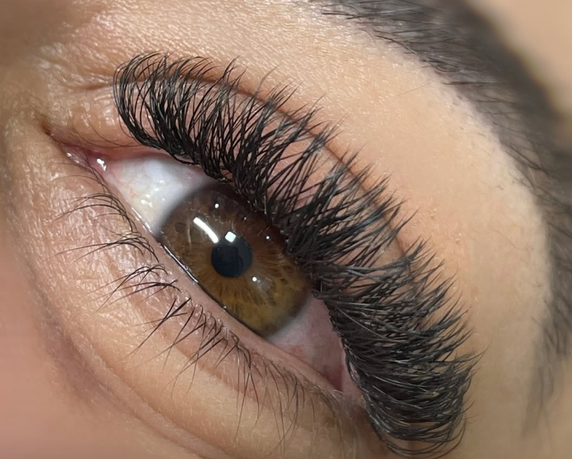
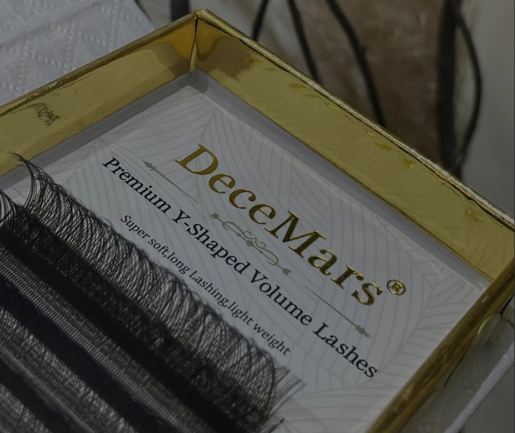

O que é a técnica de volume?
É como dar um "upgrade" no olhar! Em vez de aplicar apenas um fio por cílio natural (como na técnica clássica), no volume utilizamos leques delicados de 2 a 6 fios ultrafinos em cada cílio natural. Esses leques são feitos à mão na hora, garantindo leveza, durabilidade e um efeito visual de cair o queixo!

Por que escolher?
- Visual Personalizado
Cada leque é feito sob medida para combinar com o formato dos seus olhos e realçar sua beleza única.
- Conforto e Leveza
Apesar de parecer grandioso, os fios são ultrafinos, então o resultado é super leve!
- Adeus à Máscara de Cílios
Seu olhar estará sempre pronto, do café da manhã ao evento mais elegante.